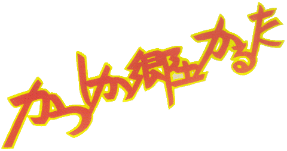
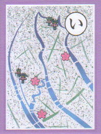

いくつもの 川が流れる 水のまち

櫓がきしむ 川面のどかな 矢切の渡し
「かつしか郷土かるた」は、「葛飾に住む誰もが、いつまでもふるさとに誇りを持ち、愛し続けて欲しい」との願いから生まれました。かるたに取上げた44の題材は、小・中学生から寄せられた5,379句の読み札の「ことば」をもとに、自然、産業、文化・歴史、人物などを選定し地域性も考慮しながら「かつしか郷土かるた制作委員会」で作成しました。

